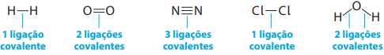
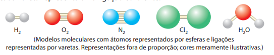
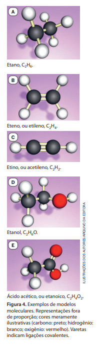
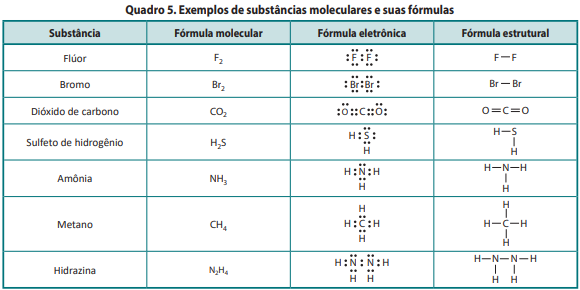
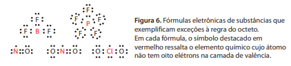
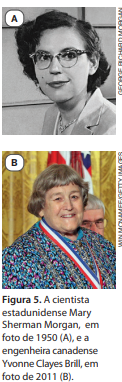
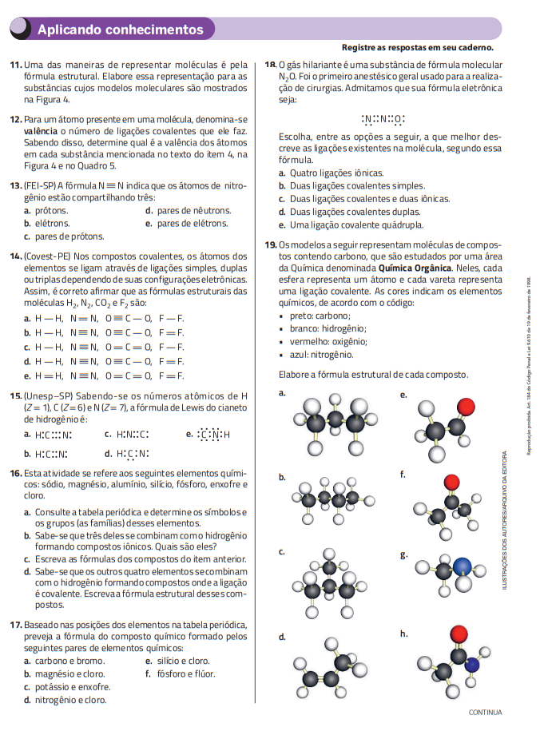
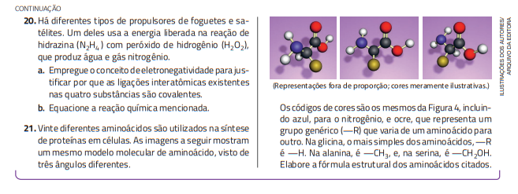

Ligação covalente
Já comentamos que, quando a diferença de eletronegatividade entre os átomos envolvidos em uma ligação é maior que 1,7, eles tendem a estabelecer ligação iônica. Mas o que acontece quando há ligação química entre átomos que tendem a atrair elétrons e cuja diferença de eletronegatividade é menor que esse valor?
Para compreender o modelo que busca explicar esse tipo de ligação, considere a combinação entre dois átomos de hidrogênio. Cada átomo de hidrogênio possui apenas um elétron e, de acordo com a regra do octeto, ele precisaria de mais um elétron para adquirir a configuração eletrônica do gás nobre hélio. Como os átomos de hidrogênio apresentam a mesma eletronegatividade, supõe‑se que os elétrons sejam atraídos igualmente pelos núcleos dos dois átomos.
Dessa forma, durante a aproximação desses átomos, há repulsão eletrostática entre elétron e elétron e também entre núcleo e núcleo. Já entre núcleo e elétron, há atração; cada núcleo atrai os elétrons e é por eles atraído. A ligação se forma quando essas forças eletrostáticas de atração e repulsão se equilibram, caracterizando a ligação covalente.
De modo geral, quando a diferença de eletronegatividade entre átomos com alta tendência a atrair elétrons envolvidos em uma ligação é menor que 1,7, o caráter da ligação tende a ser predominantemente covalente. Observe a repre‑ sentação para a ligação entre os dois átomos de hidrogênio.
Um agrupamento de átomos unidos por ligação covalente é denominado molécula. Para representá‑la, utilizam‑se a fórmula molecular (que informa os átomos e suas quantidades na molécula), a fórmula eletrônica(ou fórmula de Lewis, que indica os elétrons de valência, compartilhados ou não) e a fórmula estrutural (que representa cada ligação covalente por um traço). Como exemplos, o bserve as fórmulas, respectivamente, de gás hidrogênio, gás oxigênio, gás nitrogênio, gás cloro e água:

Referindo‑nos às moléculas representadas anteriormente, dizemos que: em H2 e Cl2, há uma ligação covalente simples; em H2O, há duas ligações covalentes simples; em O2, há duas ligações covalentes, ou uma ligação covalente dupla; em N2, há três ligações covalentes, ou uma ligação covalente tripla

Uma molécula também pode ser representada por um modelo molecular, como os mostrados a seguir, referentes, respectivamente, às moléculas H2, O2, N2, Cl2 e H2O. Nesse tipo de representação, cada esfera representa um átomo e cada vareta representa uma ligação covalente.

Outros exemplos de modelos moleculares são mostrados na Figura 4, e mais exemplos de fórmulas eletrônicas e de fórmulas estruturais estão listados no Quadro 5.


Gases nobres e regra do octeto
A substância hidrazina, N2H4, o último dos exemplos do Quadro 5, e alguns de seus derivados são empregados em diferentes sistemas propelentes de foguetes e de satélites. Um desses sistemas foi inventado pela cientista estadunidense Mary Sherman Morgan (1921‑2004) (Fig. 5.A) e usado no foguete que colocou em órbita o primeiro satélite dos Estados Unidos. Outro desses sistemas foi inventado pela engenheira canadense Yvonne Clayes Brill (1924‑2013) (Fig. 5.B) e é empregado atualmente para ajustar a órbita de satélites de comunicação.
Embora útil, a regra do octeto apresenta grande quantidade de exceções, pois nem sempre as ligações químicas são estabelecidas com os átomos envolvidos passando a ter configuração eletrônica semelhante à de gás nobre. Alguns exemplos dessas exceções são BF3, PF5, NO, NO2 e ClO2, cujas fórmulas eletrônicas são mostradas na Figura 6. Note que os átomos de boro (B), fósforo (P), nitrogênio (N) e cloro (Cl) não estão com oito elétrons na camada de valência.


Exercícios

